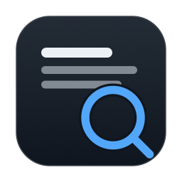
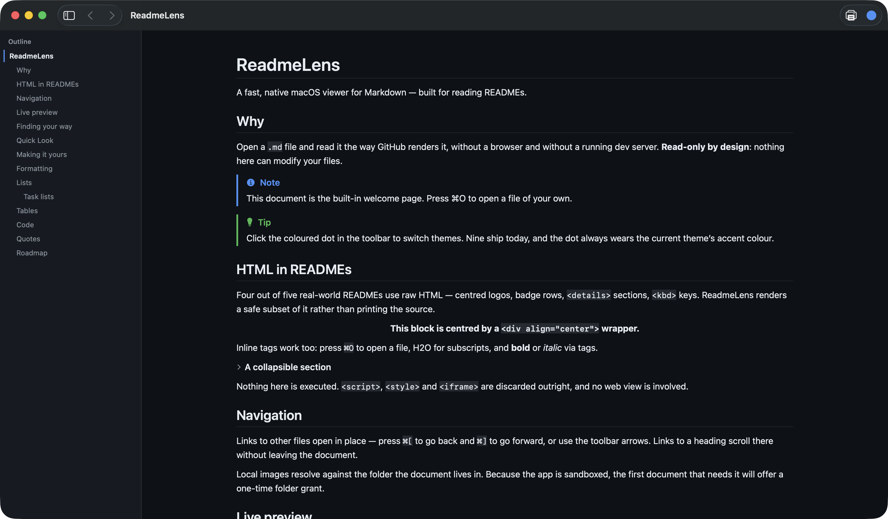
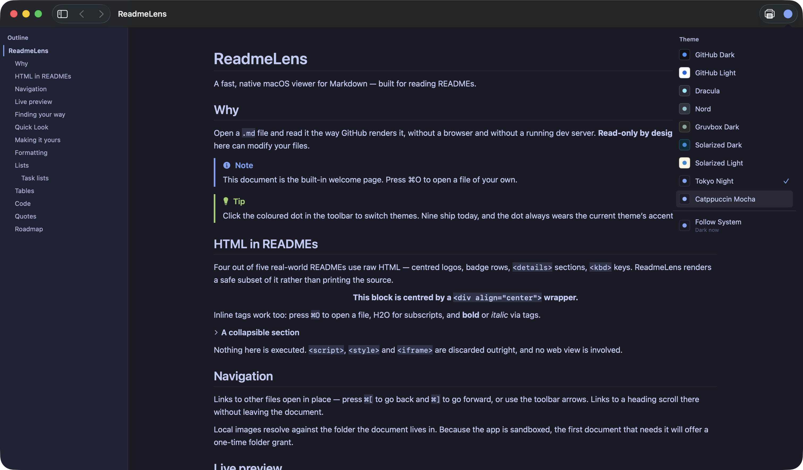
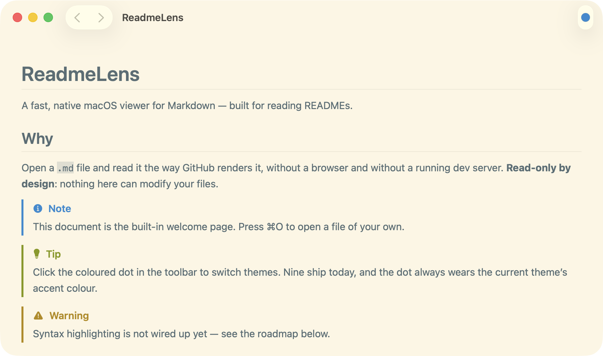

A free, open-source Markdown viewer for macOS. Open any
.md or README file and read it exactly the way GitHub renders it —
no browser, no dev server, no Electron.

macOS ships no Markdown viewer. Double-click a .md file and it opens
as raw text in TextEdit — headings as #, links as brackets, tables as
pipes. The usual workarounds are pushing the file to GitHub, running a dev server,
or installing a heavyweight editor just to read something.
ReadmeLens renders Markdown the way GitHub does, in a native app that opens instantly and cannot modify your files.
Tables with alignment, task lists, alert callouts, and the raw HTML that four out of five real READMEs contain — centred logos, badge rows, <details> sections.
About twenty languages: Swift, TypeScript, Python, Go, Rust, C-family, shell, SQL, JSON, YAML and more.
GitHub Dark and Light, Dracula, Nord, Gruvbox, Solarized, Tokyo Night, Catppuccin — plus your own from a JSON file.
Select a .md file in Finder and press Space. It renders without launching the app.
Keep it beside your editor. Saving refreshes the view and keeps your place in the document.
A heading sidebar that tracks where you are, and find-in-document that highlights matches in place.


Download the latest release, unzip it, and move ReadmeLens.app to your Applications folder. Builds are ad-hoc signed rather than notarised, so on first launch right-click the app and choose Open, or clear the quarantine flag:
xattr -dr com.apple.quarantine /Applications/ReadmeLens.app
On first launch it offers to become your default Markdown viewer, so
double-clicking any .md file opens it here.
macOS has no built-in Markdown viewer, so a .md file opens as plain
text. Install ReadmeLens and double-click the file, or select it in Finder and
press Space for a Quick Look preview.
Yes — free and open source under the MIT licence. No account, no subscription, no telemetry.
Yes. A Quick Look extension ships inside the app, so Space renders the file without launching anything.
No. ReadmeLens is read-only by design — no editor, and no write entitlement, so it cannot modify your files. Even PDF export goes through the system print panel.
Yes. Tables, task lists, strikethrough and alert callouts all render, along with the inline HTML most real READMEs depend on.
No. It is native Swift and SwiftUI. The download is a few megabytes and it launches instantly.